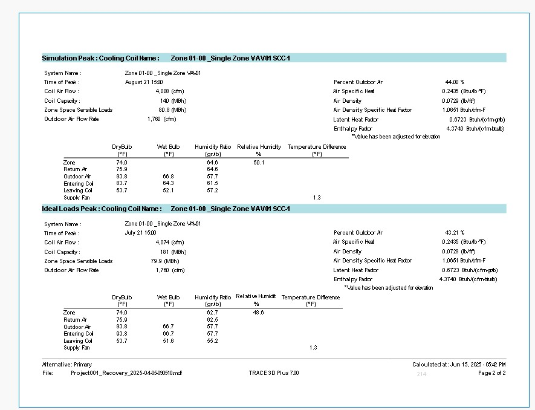
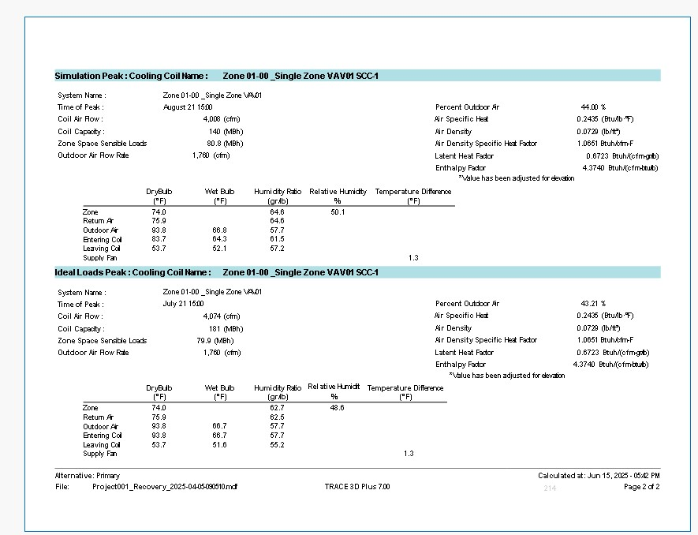

Resume
Welcome to my portfolio! Here you can find my most uptodate resume and details about my current and school projects.
My resume is a comprehensive document that outlines my skills, experiences, and projects
Below is a PDF viewer of my most current resume.
Feel free to download it for a detailed overview of my qualifications.
For more information about my projects, please navigate to the tabs above.
Thank you for visiting my portfolio!
Current Projects
BACnet/IP on ESP32
Project Current Status: In Development
This project implements a lightweight BACnet/IP protocol stack on an ESP32 microcontroller using the ESP-IDF framework and FreeRTOS. It enables the ESP32 to function as a standalone BACnet/IP device, capable of participating in building automation networks over Wi-Fi.
Key Features:
- Who-Is → responds with I-Am
- Read Property → returns standardized error for unimplemented properties
- Object identifier
- Max APDU size
- Segmentation info
- Vendor ID
Technologies Used:
Desierd ProjectOutcomes:
- Complete implementation of BACnet/IP protocol stack on ESP32
- Full support for BACnet/IP device discovery and communication
- Ability to handle multiple BACnet/IP requests concurrently
- Integration with building automation systems for real-time monitoring and control
- Create the building block for BACnet network discovery, communication, and BACnet devices
here are screenshots from BACnet/IP on ESP32 project:


CutCam
A wireless camera that attaches to any hair clipper and streams video to smart devices. Solves the problem of self-grooming visibility.
- Attachable to any clipper
- 3D printable design
- Smartphone streaming
Project Current Status: In Development
here are the screenshots of 3D models and 3D-printed parts.
Consulting at Medhanealem Ethiopian Orthodox Church in Oakland, CA on HVAC upgrade Project
Project Overview and Tasks:
As a consultant, I provided expertise on the HVAC upgrade project for Medhanealem Ethiopian Orthodox Church in Oakland, CA. The project involved evaluating the existing HVAC system and recommending improvements to enhance energy efficiency and comfort.
Key Responsibilities:
- Conducted a comprehensive assessment of the current HVAC system
- Identified cost-effective solutions for system upgrades
- Performed load calculation and sized unit using TRACE 3D
- Collaborated with the church leadership to understand their needs and constraints
- Provided technical guidance on the implementation of the recommended upgrades
here are screenshots from BACnet/IP on ESP32 project:


 



Personal Projects
CutCam
A wireless camera that attaches to any hair clipper and streams video to smart devices. Solves the problem of self-grooming visibility.
- Attachable to any clipper
- 3D printable design
- Smartphone streaming
Project Current Status: In Development
here are the screenshots of 3D models and 3D-printed parts.